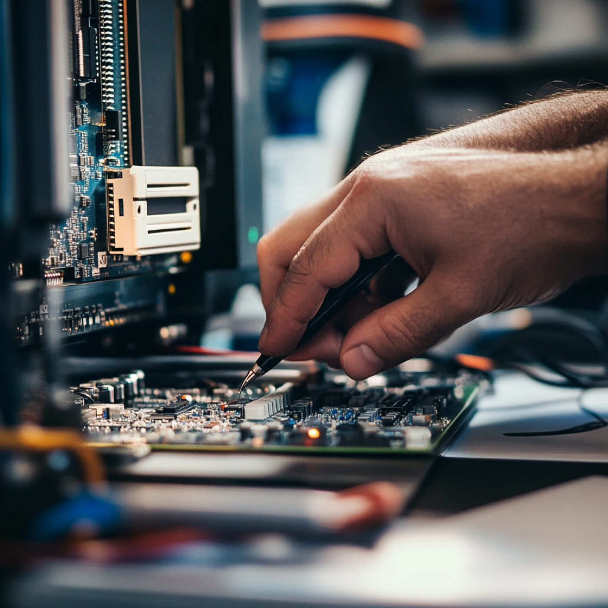

Dépannage et réparation informatique à domicile à Philippeville
Votre informaticien est pratiquement votre voisin. Basé à Florennes, à quelques minutes de Philippeville, Mick Computer se déplace chez vous pour réparer votre ordinateur, sans jargon, sans mauvaise surprise sur la facture.

Votre dépanneur informatique à quelques minutes de Philippeville
Inutile de faire la route jusqu'à Charleroi ou Namur pour un ordinateur qui rame. Nous sommes installés à Florennes, la commune voisine. Cette proximité change tout : moins de déplacement, moins d'attente, et un interlocuteur que vous pouvez rappeler.
Ce que nous réparons au quotidien
- Ordinateur qui ne démarre plus, écran noir, redémarrages en boucle
- Lenteurs et blocages : nettoyage, optimisation, passage en SSD
- Virus et publicités envahissantes, sécurisation de vos accès
- Écran cassé, clavier ou batterie sur ordinateur portable
- Photos, documents ou comptabilité perdus après une panne de disque
- Installation de la box, du Wi-Fi, d'une imprimante ou d'un nouvel ordinateur
Un service pensé pour ceux qui n'aiment pas l'informatique
Beaucoup de nos clients à Philippeville nous appellent parce qu'ils en ont assez qu'on leur parle en langage technique. Nous prenons le temps d'expliquer ce qui a lâché, avec des mots normaux, et nous vous montrons comment éviter que ça recommence.
Nous n'essayons jamais de vous vendre une machine neuve quand une réparation suffit. Et quand la réparation ne vaut vraiment pas le coup, nous vous le disons franchement.
Villages et sections desservis autour de Philippeville
Nous nous rendons à Philippeville même ainsi que dans ses villages : Villers-le-Gambon, Neuville, Sautour, Samart, Jamiolle, Merlemont, Omezée, Roly, Surice, Vodecée, Franchimont, Fagnolle et Romedenne. Nous couvrons aussi Florennes, Walcourt, Couvin, Mettet, Dinant et toute la Wallonie.
Nos services, disponibles chez vous
- Réparation de PC et de Mac, toutes marques
- Récupération de données après une panne ou une suppression accidentelle
- Montage de PC sur mesure
- Contrats d'entretien pour écoles, indépendants et petites entreprises
Un tarif clair, annoncé à l'avance
Nous travaillons au taux horaire, à partir de 30€/h HTVA, soit 36,30€/h TVAC (hors déplacement) : vous ne payez que le temps réellement passé. Après le diagnostic, vous savez où vous allez, et vous décidez. Nous travaillons sur rendez-vous, du lundi au vendredi de 9h à 19h30.
Un souci informatique à Philippeville ?
Décrivez votre souci, on vous rappelle avec une solution claire et une estimation du temps nécessaire.